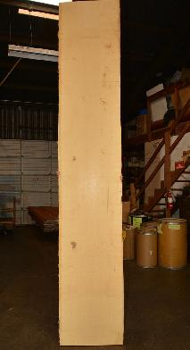
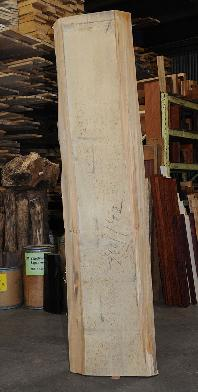
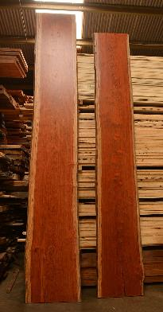
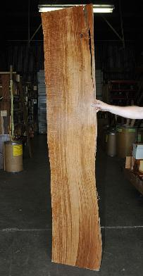

-

Alaskan Yellow Cedar Table Slab
Chamaecyparis nootkatensis
This is fantastic wood with grain so fine you can hardly see the annular rings.
-

Camphor Burl Book-matched Table Slabs
Cinnamomum sp.
This rare burl is from S.E. Asia and is seldom seen on the world market. It is fine-grained and varies in color from a light reddish-brown to almost scarlet. These are "good with the bad" boards because we have left them as they came off our saw mill, i.e. we have not end-trimmed them or milled out any defects. These were milled out of exceptionally large blocks of burl. Green to partially air dried.
These pieces have sold, but we have more available - call us at 503-274-1271 for more information. To see more, search for Item Numbers W31413, W31411, W31406, and W31407.
-

German Lime
Tilia platyphyllos
Also called European Basswood, this species grows throughout Europe. It was the favorite wood of the English carver Grinling Gibbons and the German Gothic sculptor Tilman Riemenschneider. Pale in color, it has a straight grain and fine, even texture. It is easy to work and can easily be carved with, against, and cross the grain. It is recognized as one of the classic carving woods. Air-dried.
We can cut this to any length. If you would like this whole, we will need to ship it freight collect.
-

Bubinga Table Slabs
Guibourtia tessmannii
Called by some woodworkers African Rosewood, Bubinga is a deep, lustrous, brownish-red color with a fine, darker striping. The figure makes the wood doubly beautiful. It is very hard and heavy and takes a glassy, smooth finish. Kiln-dried.
-

English Brown Oak
Quercus robur
This Oak grew on the grounds of Woburn Abbey in England. The tree was 6-7 feet in diameter and its age was estimated at 600 years plus. The log yielded almost 4,000 board feet of lumber. I had the Oak quartersawn so as to exhibit the beautiful rays or 'silver grain' inherent to this species. It also has a dark pigment tiger-striping that makes this Oak doubly gorgeous. We have boards 1", 1 1/2", 2", and 3" thick and up to 30" wide. We have just stickered this wood to air dry. These pieces are still green.